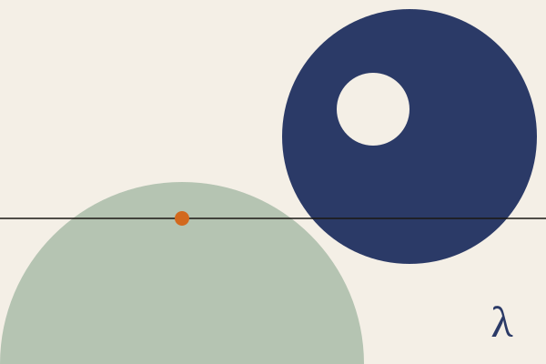

London · trading as ChaosCafe Ltd
Riccardo Cambiassi.
I sit with complex systems until they explain themselves.
Fractional CTO and software consultant. I help companies make technical decisions they won’t regret, and keep their systems simple enough to change.
Currently taking on new work

What I do
-
Fractional CTO
Technical leadership on a part-time basis, for as long as it is useful: architecture decisions, hiring, delivery, and the conversations with founders and boards that nobody else on the team particularly wants to have.
-
Architecture and platform engineering
System design and platform foundations — and, more often than anyone would like, getting a complex system back under control, which generally begins by finding out, calmly, what it is actually made of.
-
Simple, not easy.
Systems pick up services, layers and dependencies over the years, and each one made sense when it arrived. A lot of my work is finding out which of them can go, and taking them out without anyone noticing. It’s slow and careful, and it pays for itself.
About
I have spent most of my working life inside small and mid-sized agencies, building software (a good deal of it interactive: installations, live events, things that have to behave themselves in front of an audience) and, eventually, running the companies that build it.
In 2015 I co-founded 100Starlings, a software development cooperative, with a couple of fellow engineers — boutique, loosely joined and fully distributed, with people in four countries across Europe and South America. It is still where most of my time goes. ChaosCafe is the rest of it: the fractional CTO and advisory work I take on directly.
The name is a leftover from an early enthusiasm for chaos engineering, breaking systems on purpose to see what they are made of. I still like finding out what systems are made of. Now I mostly use that to make them smaller.
Something you’re worried about? Let’s talk.
If there is a system, a team or a decision you are worried about, a short call is generally the cheapest available method for finding out whether the thing you’re worried about is, in fact, the thing.
Book a call